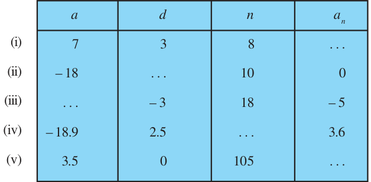
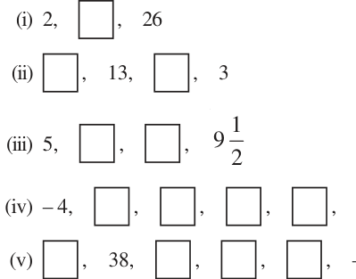

EXERCISE
- 1.Fill in the blanks in the following table, given that a is the first term, d the common
difference and a_{n} the nth term of the AP:

- 2.Choose the correct choice in the following and justify :
- (i)30th term of the AP: 10, 7, 4, . . . , is
- (A)97 (B) 77 (C) \(- 77\) (D) \(- 87\)
- (ii)11th term of the AP: \(- 3\), \(- \frac{1}{2}\) , 2, . . ., is
- (A)28 (B) 22 (C) \(- 38\) (D) \(- 48 \frac{1}{2}\)
- 3.In the following APs, find the missing terms in the boxes :

- 4.Which term of the AP : 3, 8, 13, 18, . . . ,is 78?
- 5.Find the number of terms in each of the following APs :
- (i)7, 13, 19, . . . , 205 (ii) 18, 15 2 , 13, . . . , \(- 47\)
- 6.Check whether \(- 150\) is a term of the AP : 11, 8, 5, 2 . . .
- 7.Find the 31st term of an AP whose 11th term is 38 and the 16th term is 73.
- 8.An AP consists of 50 terms of which 3rd term is 12 and the last term is 106. Find the 29th
term.
- 9.If the 3rd and the 9th terms of an AP are 4 and \(- 8\) respectively, which term of this AP is
zero?
- 10.The 17th term of an AP exceeds its 10th term by 7. Find the common difference.
- 11.Which term of the AP : 3, 15, 27, 39, . . . will be 132 more than its 54th term?
- 12.Two APs have the same common difference. The difference between their 100th terms is
100, what is the difference between their 1000th terms?
- 13.How many three-digit numbers are divisible by 7?
- 14.How many multiples of 4 lie between 10 and 250?
- 15.For what value of n, are the nth terms of two APs: 63, 65, 67, . . . and 3, 10, 17, . . . equal?
- 16.Determine the AP whose third term is 16 and the 7th term exceeds the 5th term by 12.
- 17.Find the 20th term from the last term of the AP : 3, 8, 13, . . ., 253.
- 18.The sum of the 4th and 8th terms of an AP is 24 and the sum of the 6th and 10th terms is
- 44.Find the first three terms of the AP.
- 19.Subba Rao started work in 1995 at an annual salary of ` 5000 and received an increment
of ` 200 each year. In which year did his income reach ` 7000?
- 20.Ramkali saved ` 5 in the first week of a year and then increased her weekly savings by